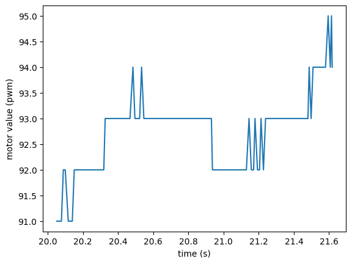
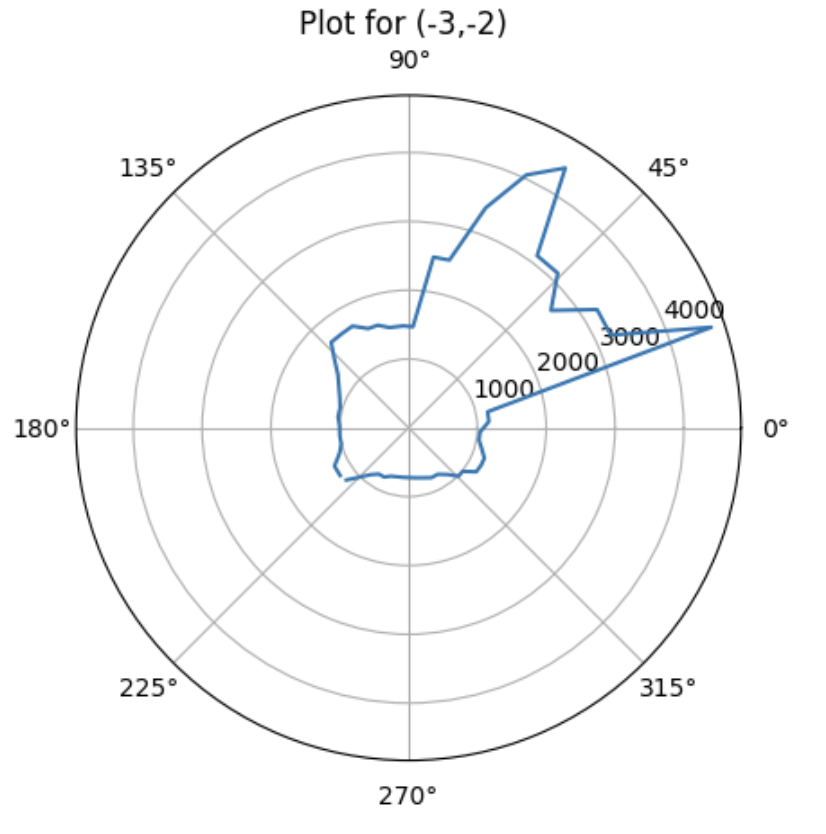
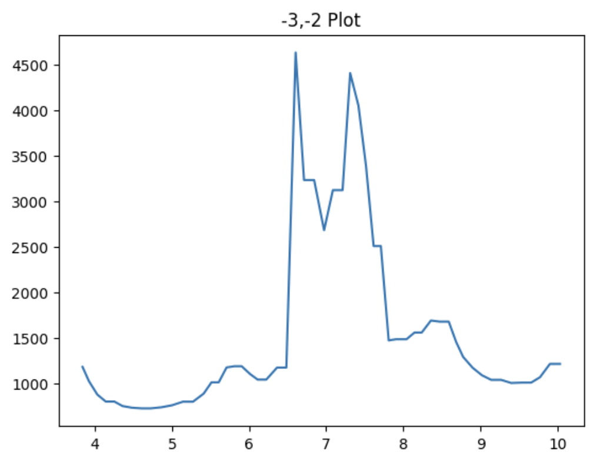
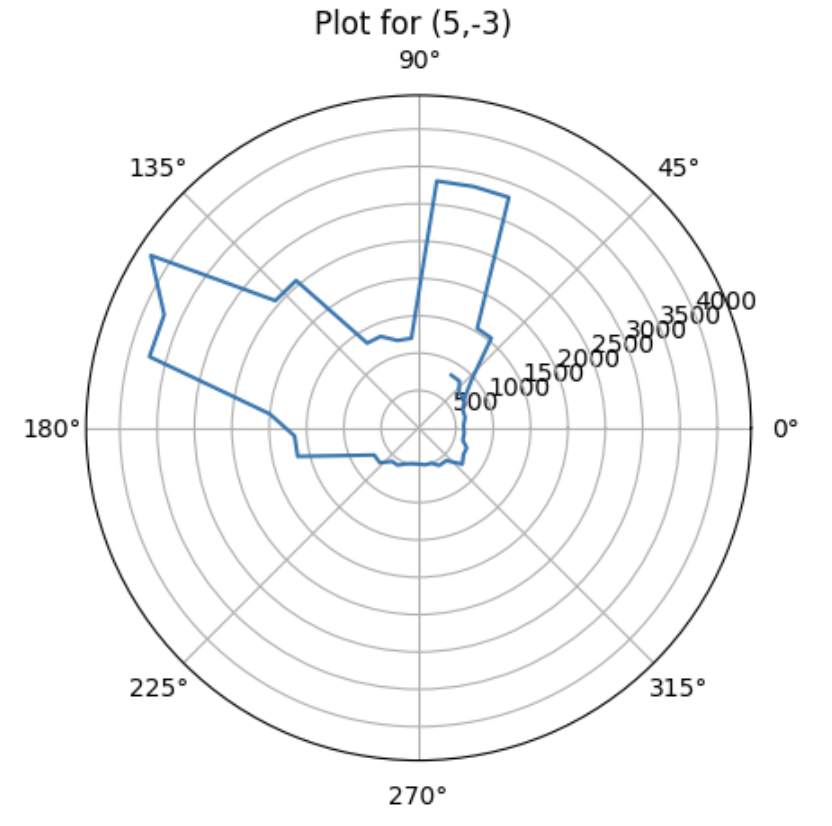
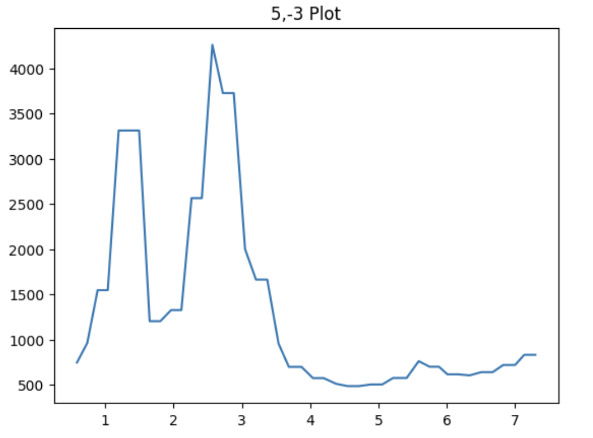
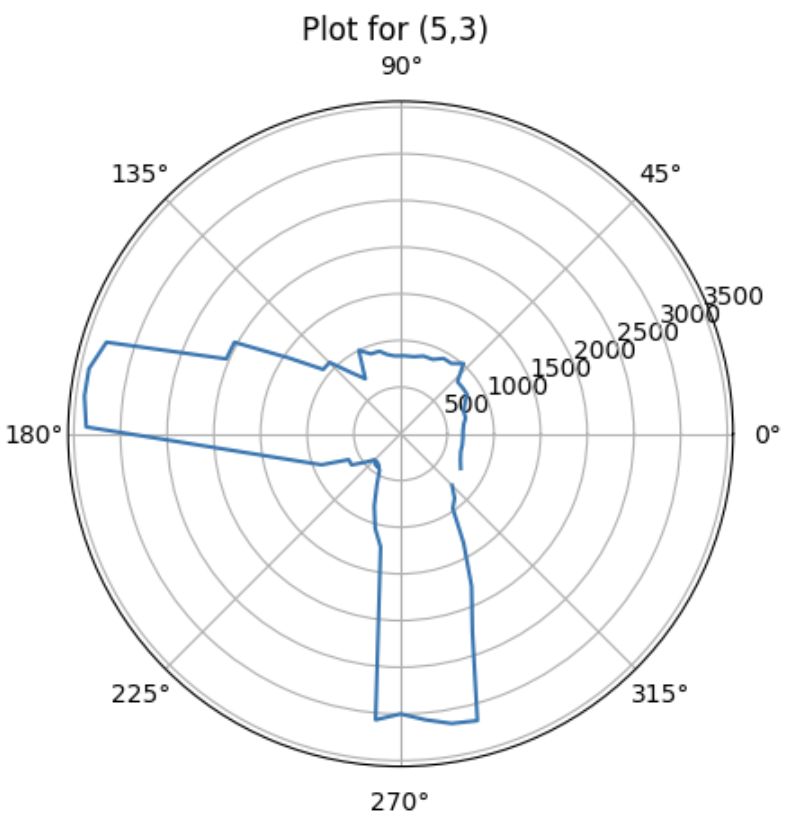
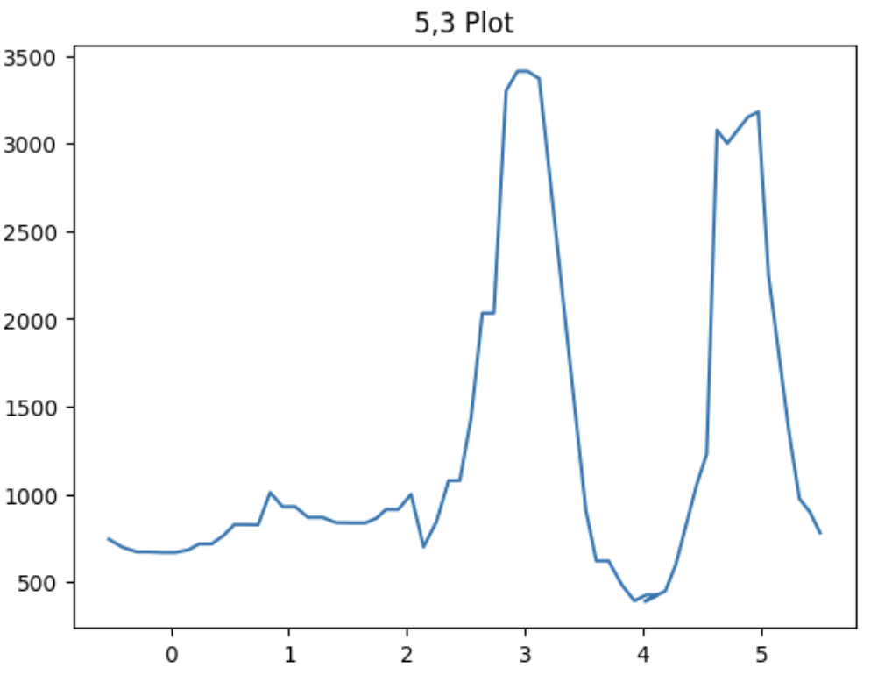
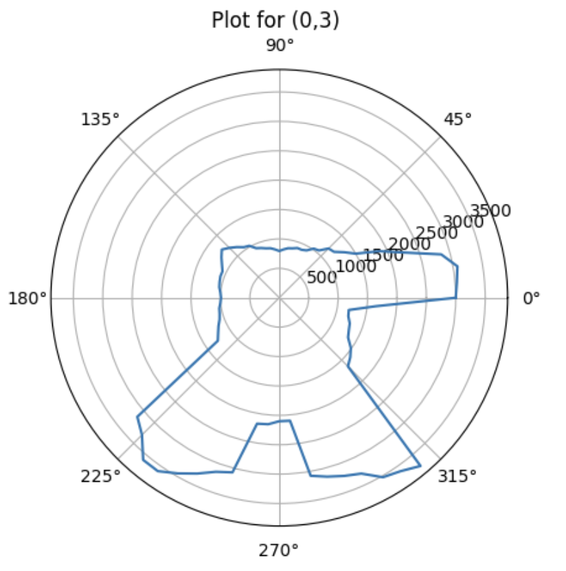
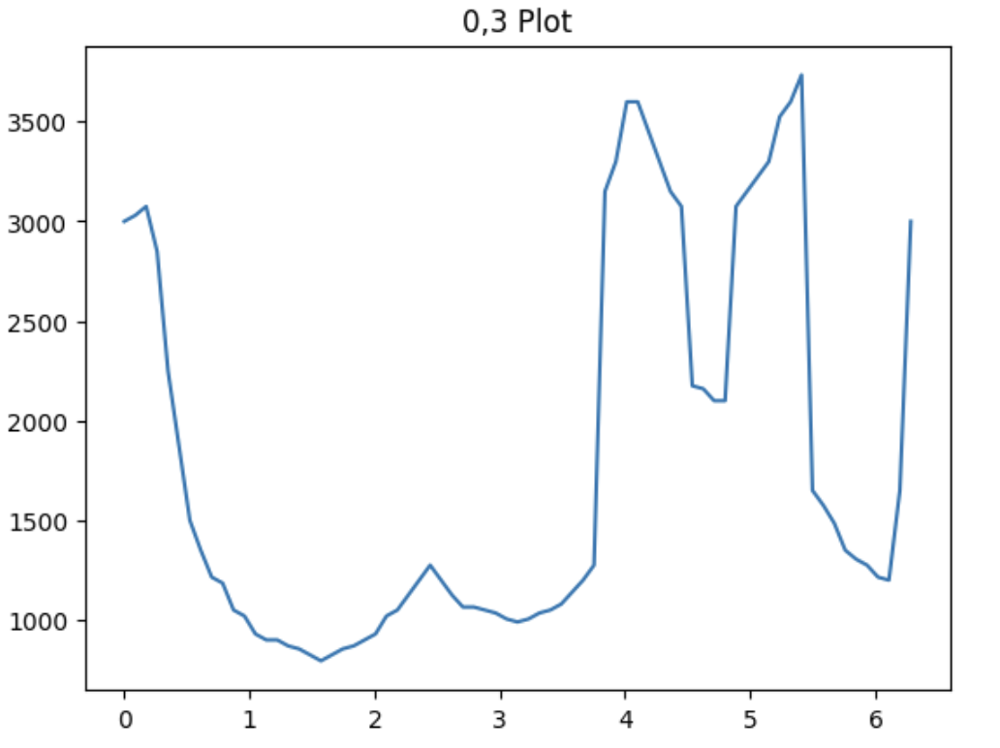
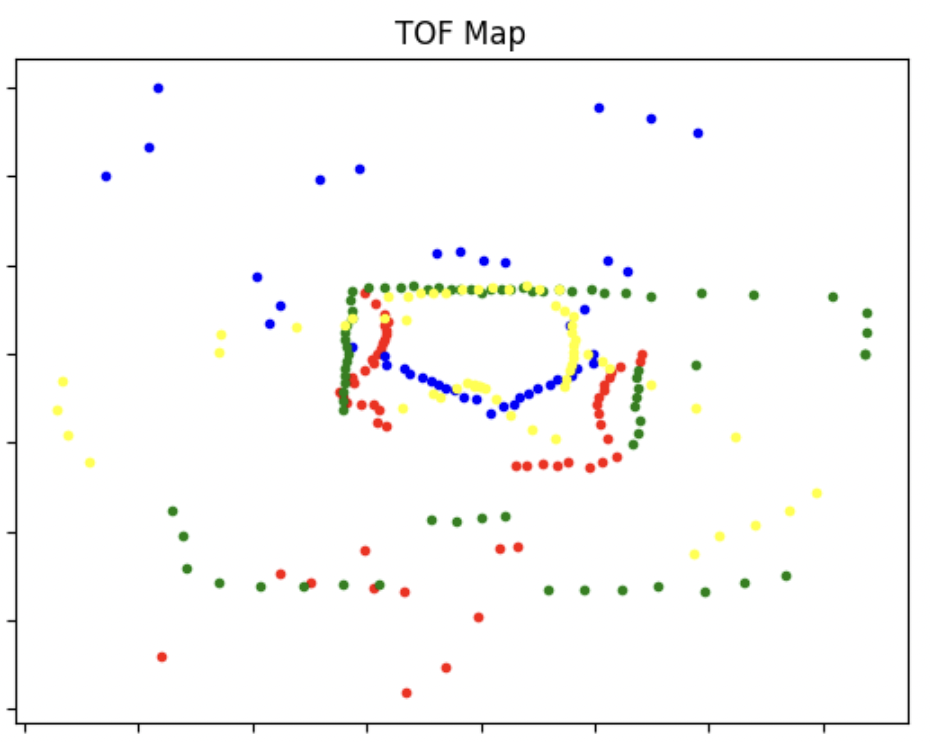

Objective
In lab 9, I used PID control and IMU/motor/ToF data to take data in a circle and in posprocessing, create a map of the robot's environment. To do this, I placed the robot in a few marked locations in the lab and had it spin around its own axis, collecting ToF data the entire time. I then used transformation matrices to combine all these measurements and eventually build an accurate map of the room.
I worked with Eshita Sangani on this lab.
Control
I chose to use angular speed conrol with raw gyroscope values to control the spinning of the robot. This technique uses raw gyroscope data -- specifically the z-axis daa -- that is recorded by the IMU while spinning the robot to ensure a constant angular velocity. Closed-loop control was preferred in this situation over open-loop control because it resulted in more accurate data; thus, postprocessing also became easier.
For this control the goal was to spin my robot every 20 degrees and record data accordingly. The code is as follows:
The 90 motor value comes from using open loop control to determine the minimum speed to spin the robot at. At this speed, I was able to get 150 data points in one spin, or around 15 data points every second.
I first wanted to tune the PID controller, so I started out using the 0.05 as my kP value and was able to get fairly consistent behavior with a kP value of 0.03. I then tried to move on to implementing the integral and derivativve terms. However, the results were very inconsistent at first due to the battery power; thus the integral term was not added due to the windup from these small errors that would happen and would cause larger fluctuations to occur. I tried adding the D term but it wasn't consistent enough to justify incorporating it.
The resulting angular velocity is plotted below; note that due to the robot being unable to turn well, the motor values increase then decreases. I was unable to fix this behavior in lab.

While testing, I noticed that the gyroscope z axis daa was very inconsistent, wih angles that ranged from -50 to +50 while spinning. After asking a TA, I found out that this was due to my IMU being placed on its side, with the z-axis direction facing horiontally rather than vertically. After I fixed this, I was able to get the robot spinning correctly, as seen below.
Read Out Distances
I placed the robot at each of the marked points in lab and had the robot spin around, collecting ToF data. The associated polar plots and TOF vs Time plots are shown for each point.
Location 1: (-3,-2)
 Location 2: (5,-3)
 Location 3: (5,3)
 Location 4: (0,3)
 Merge and Plot The Readings
At this point, I computed the transformation matrices and converted the measurements from the ToF sensor (robot frame) to the map (global frame). This is the function that was used - inspired from ryan.
The transformation matrices were simple trigonometry; x = dist * cos(theta) and y = dist * sin(theta).
The following map shows the data that was plotted with no walls added.
The following map shows the data that was plotted with walls added. While most of the walls were somewhat simple to place, the top wall was not very clear and thus a lot of assumptions were made to plot that wall.
Looking back on this lab, it would have been nice to have implemented finer PID control to improve the angular readings. We used P because, as we said above, the I was not working well due to the battery and the D term did not improve the performance either. However, because of this, the robot was not able to properly get the angle and ToF readings matched for postprocessing. To fix this, I tried to use a time scale (where the amount of time it had rotated corresponded to the angle), but this only helped a little, probably due to slight inconsistencies in the speeds of rotation for each sample.
However, despite this, the robot was able to map for some obstacles, and the polar plots were fairly accurate to real life.